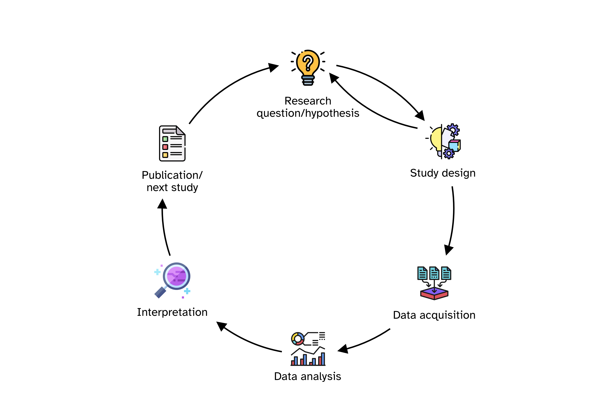
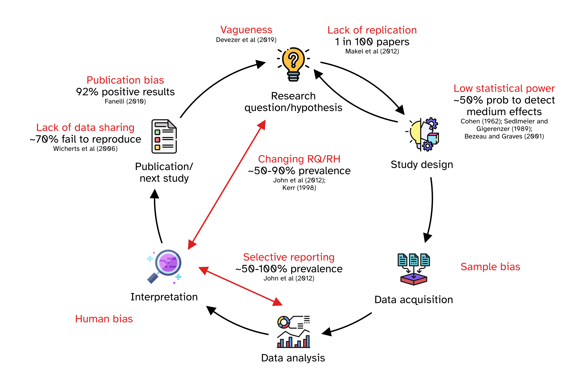
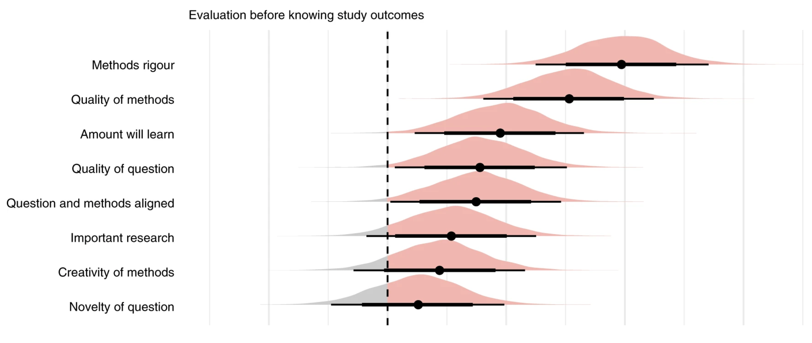

04 - Preregistration and Registered Reports
What they are and how to
University of Edinburgh
Research process cycle

Questionable research practices (QRPs)

Preregistration
Preregistration is the practice of publicly specifying a study’s research questions/hypotheses, methods, and analysis plan in advance to control for analytic adequacy and increase transparency in research.
You write a document with the plan.
You upload it to a preregistration service (like OSF, aspredicted.org, …)
It is time-stamped. You proceed with the study. No formal peer-review required.
Traditional publishing

Registered Reports

How to write an RR
Stage 1 manuscript
Write introduction, background and methods.
Target specific and clear RQs (and RHs) and assess feasibility (within constraints).
Pilot studies or data simulations.
Prepare a research compendium and ensure reproducibility.
In Principle Acceptance
Carry out the study according to the Stage 1 registered protocol.
Stage 2 manuscript
- Write results (of registered analyses + optional exploratory non-registered analyses), discussion and conclusion.
Resources
Proportion of negative results

From Scheel et al. (2021).
Not killing the vibe

From Soderberg et al. (2021).
Guidance for PhD students
PhD students can benefit from RRs.
First year is critical: conceptualisation and writing of RR Stage 1.
Time spent on preparing Stage 1 seems longer but time we should spend anyway. Overall time (from inception to publication) similar.
Stage 2 review is very quick. Most issues with traditional review are about things that should have been done, but it’s too late.
Venues
Subject specific journals that offer Registered Reports.
PCI RR: https://rr.peercommunityin.org.